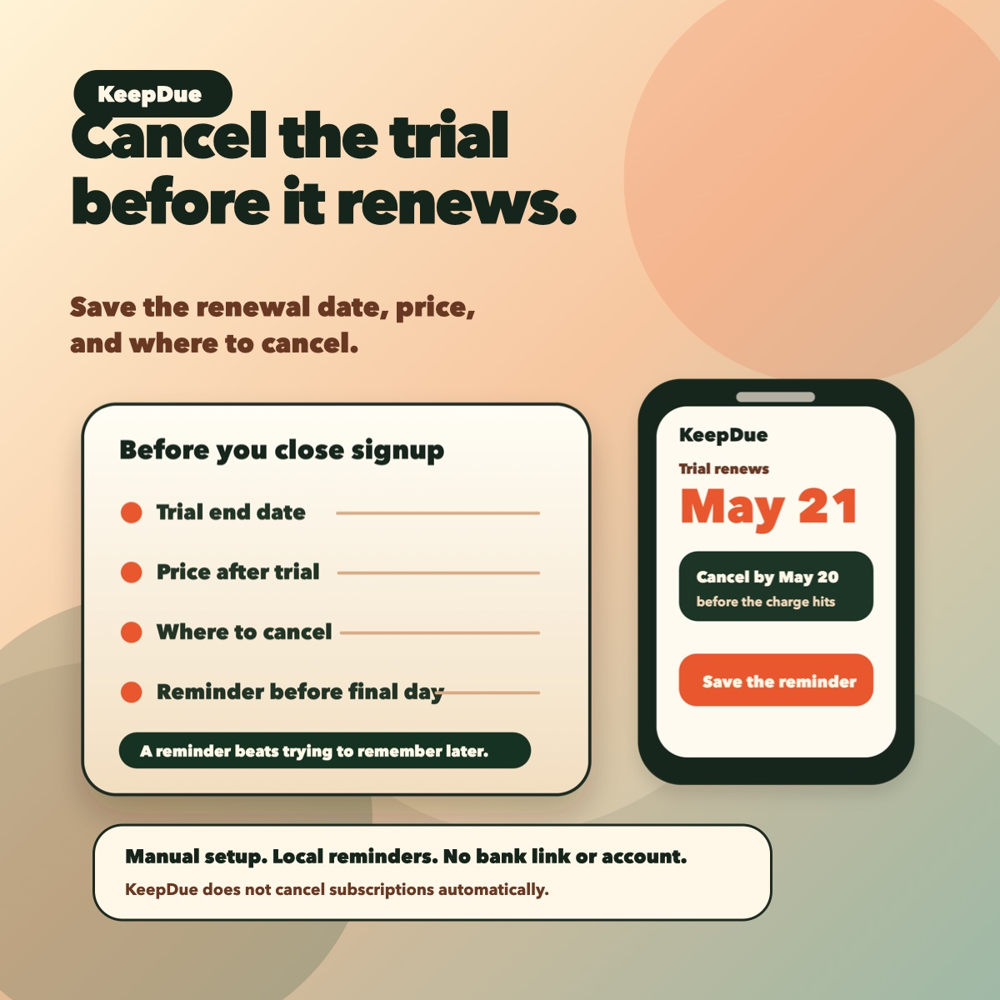

If you use free trials often, the risky moment is not only signup. It is the morning when you need to decide whether to cancel, keep, or double-check a renewal before it charges.
KeepDue does not currently send an automatic morning digest. The current launch build is manual-first: you add the trial or renewal date yourself, then use reminders and the due-next view to decide what needs attention.

The morning check
- Open your reminder list before checking new offers or signing up for another trial.
- Look at what is due today, tomorrow, and this week.
- Decide whether each item is cancel, keep, or check terms.
- Open the subscription or app account page before the final day.
- Add a note after you cancel or decide to keep it.
What to save when you sign up
- Trial name.
- Renewal or conversion date.
- Price after the trial.
- Where to cancel.
- A decision day before the final charge.
Where KeepDue fits
KeepDue is useful when you want a small morning check without linking a bank account or creating another account. Add the trial manually, set reminders before the final day, and review the due-next list when you start the day.
The current launch build does not cancel subscriptions automatically, import subscriptions, sync across devices, or promise a paid unlock. It is free for up to 5 active subscriptions on one device.